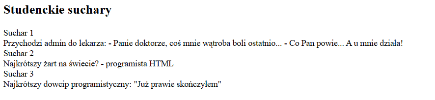
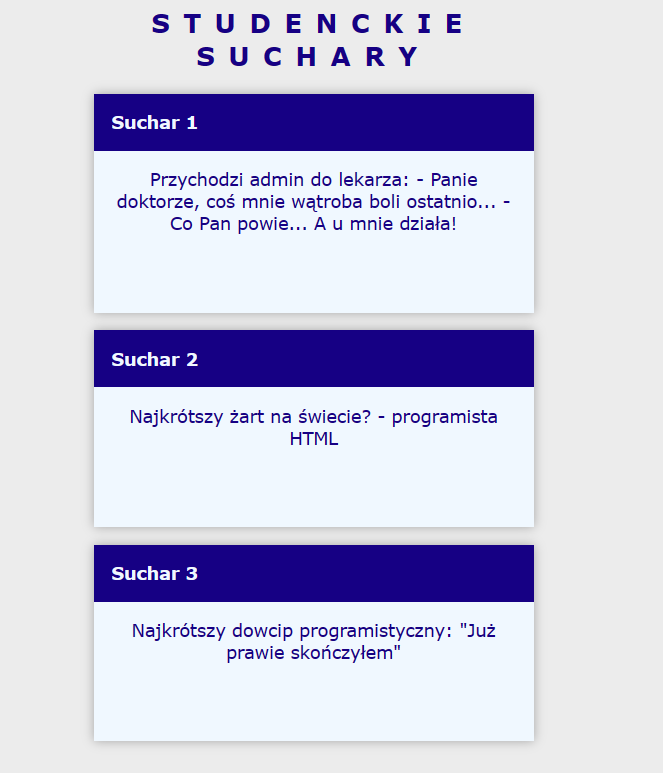

Na sam początek do tego żeby programować strony internetowe będzie potrzebne nam specjalne środowisko do kodowania.
Przykładowymi edytorami HTML i CSS są : Visual Studio Code, Notepad++, Adobe Dreamweaver itd.
Zacznijmy od tego z czego będzie się składało całe nasze kodowanie w html-u.
Najważniejszymi elementami występującymi w tym języku będą znaczniki.
Występują zazwyczaj parami (otwierający oznacza początek, kończący koniec pewnego fragmentu : <p>
…. <p>.
W znacznikach otwierających mogą być umieszczone atrybuty przekazujące dodatkowe informacje :
<div class='container'>
…</div>
Przykładowe znaczniki:
</h2>
Tekst <h2>
Znacznik <h2?> oznacza, że przeglądarka spodziewa się tesktu, który zostanie naszym nagłówkiem. W zależności od cyfry występującej po literze h, dobierze odpowiednią jego wielkość.
<p>Ten znacznik oznacza paragraf
</p>
<br>
Znacznik nowej linii (to tak jak wciśnięcie ENTER na klawiaturze)
<a href="Tutaj wpisujemy link do danej strony do której chcemy żeby nas przekierowało">
</a>
<img src="lokalizacja naszego obrazka" alt="Tytuł obrazka (kiedy nie będzie chciał się nam załadować obrazek, to wyświetli się w jego miejscu nasz tytuł)">
<div>
</div> Znacznik ten dzieli nam stronę na poszczególne sekcje.
Html na stronie to nasz szkielet na którym pracujemy.
W przyszłości będziemy do niego mogli dodawać różne pliki, które będą wpływały zarówno na wygląd jak i funckjonowanie naszej strony.
Przykładowym tego typu plikiem jest plik .css, który wprowadza warstwę wizualną do naszej strony.
Do tego typu plików odwołujemy się w taki sposób:
<link rel="stylesheet" href="nasz_plik.css">
Dla przykładu z samego tekstu napisanego w html-u:

Możemy zrobić tego typu stronę:
